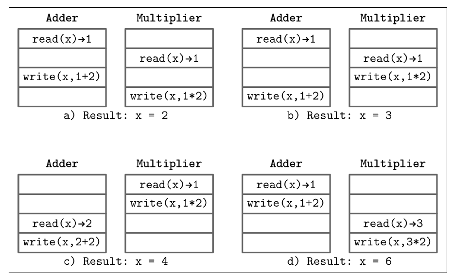

فصل ۸ · صص. ۱۷۱–۱۹۴
مقدمه و نمای کلی
Introduction and Overview
Database Internals, 1st Edition
بخش دو از موتورهای ذخیرهسازی به سیستمهای توزیعشده میچرخد. آغازش (صص. ۱۶۷–۱۶۹) واژگانی را تعریف میکند که در سراسرش به کار میرود:
- شرکتکنندهها، یعنی process و نود و replica، که هر یک حالت محلی دارند؛
- پیوندها برای رد و بدل پیام؛
- ساعتها، که یا منطقیاند، یعنی شمارندهی یکنوا، یا فیزیکی، یعنی «ساعت دیواری»؛
- و الگوریتمهای توزیعشده، که قدمهای محلی و تعاملها را بهرغم پیوندها و processهای نامطمئن وصف میکنند.
هدفشان همآهنگی و همکاری و پخش و consensus است (ص. ۱۶۹).
بعد این فصل پایهها را میسازد (صص. ۱۷۱–۱۹۴):
- حتی دو thread که یک متغیر را بهروز میکنند چهار برآمد ممکن دارند (شکل ۸-۱)، پس به consistency model نیاز داریم.
- مغلطههای محاسبات توزیعشده و فرضهای پشتشان: پردازش، ساعت، consistency حالت، فراخوانی محلی در برابر دور، شکست، پارتیشن و شکستهای آبشاری (صص. ۱۷۴–۱۸۱).
- پیوندها، که از گمشدن منصفانه از راه تأیید و بازفرست لجباز تا پیوند بیعیب بنا میشوند، با شمارهی ترتیب و buffer مرتب کردن دوباره و تکراریزدایی (صص. ۱۸۲–۱۸۶).
- اینکه چرا تحویل exactly-once واقعاً پردازش exactly-once است (صص. ۱۸۶–۱۸۷).
- دو نتیجهی ناممکنی: مسئلهی دو ژنرال (صص. ۱۸۷–۱۸۹) و FLP (صص. ۱۸۹–۱۹۰).
- مدلهای concurrency، یعنی asynchronous و همزمان و نیمههمزمان، و مدلهای شکست، یعنی crash-stop و crash-recovery و omission و دلبخواهی یا Byzantine (صص. ۱۹۰–۱۹۳).
فهرست خود فصل (از فهرست مطالب کتاب)
- اجرای همزمان — ص. ۱۷۱
- بخش shared state در سیستمی توزیعشده — ص. ۱۷۳
- مغلطههای محاسبات توزیعشده — ص. ۱۷۴
- پردازش — ص. ۱۷۵
- ساعت و زمان — ص. ۱۷۶
- بخش consistency حالت — ص. ۱۷۷
- اجرای محلی و دور — ص. ۱۷۸
- نیاز به رسیدگی به شکست — ص. ۱۷۸
- پارتیشن شبکه و شکست جزئی — ص. ۱۷۹
- شکست آبشاری — ص. ۱۸۰
- انتزاعهای سیستمهای توزیعشده — ص. ۱۸۱
- پیوند — ص. ۱۸۲
- مسئلهی دو ژنرال — ص. ۱۸۷
- ناممکنی FLP — ص. ۱۸۹
- بخش concurrency سیستم — ص. ۱۹۰
- مدلهای شکست — ص. ۱۹۱
- خطای از کار افتادن — ص. ۱۹۱
- خطای omission — ص. ۱۹۲
- خطای دلبخواهی — ص. ۱۹۳
- رسیدگی به شکست — ص. ۱۹۳
- خلاصه — ص. ۱۹۳
از کتاب
مقدمه
بخش دو با این شوخی Lamport باز میشود که کامپیوتری که از وجودش خبر نداشتید میتواند مال شما را بهکارنیامدنی کند (ص. ۱۶۷). مقیاس دادن عمودی گران و نگهداشتش سخت است، پس سیستمها افقی مقیاس میگیرند، و روی ماشینهای شبکهشدهی زیادی اجرا میشوند که مثل یک هستی منطقی عمل میکنند (ص. ۱۶۷). بیشتر پژوهش این حوزه از این واقعیت شروع میکند که هیچ چیزی تماماً قابل اطمینان نیست: پیوندها پیام را معطل و بیترتیب و گم میکنند، و processها میایستند و کند میشوند و از کار میافتند یا از کنترل در میروند (ص. ۱۶۸). پردازندهها خودشان سیستمهای توزیعشدهی ریزیاند، ولی اولیههایشان یکراست بازاستفادهشدنی نیستند چون ارتباط دور گران و نامطمئن است (ص. ۱۶۸).
از کتاب
اجرای همزمان
یک thread تنها که i = 1; i += 2; i *= 2 را اجرا کند همیشه ۶ میدهد. با دو thread که x را مشترک دارند، برآمد به لابهلا رفتن بستگی دارد (شکل ۸-۱، ص. ۱۷۲):


| حالت | لابهلا رفتن | نتیجه |
|---|---|---|
| الف | هر دو ۱ را میخوانند؛ افزاینده ۳ مینویسد؛ ضربکننده با ۲ روینویسی میکند | ۲ |
| ب | هر دو ۱ را میخوانند؛ ضربکننده ۲ مینویسد؛ افزاینده با ۳ روینویسی میکند | ۳ |
| ج | ضربکننده اول تمام میکند با ۱ × ۲، بعد افزاینده با (+۲) | ۴ |
| د | افزاینده اول تمام میکند با ۱ + ۲، بعد ضربکننده با (× ۲) | ۶ |
مفهوم consistency modelها تعریف میکنند که کدام تاریخهای اجرا مجازند، و مجموعهی حالتهای ممکن را مقید یا شل میکنند (ص. ۱۷۲). سیستمهای همزمان میتوانند حافظه را مشترک داشته باشند؛ و سیستمهای توزیعشده حالت محلی و رد و بدل پیام دارند (صص. ۱۷۲–۱۷۳).
Vault note: کادر کناری کتاب دربارهی همزمان در برابر موازی (ص. ۱۷۳). قدمهای همزمان در زمان همپوشاناند؛ و قدمهای موازی همهنگام روی چند پردازنده اجرا میشوند. قیاس جو آرمسترانگ: concurrency دو صف برای یک دستگاه قهوه است، و موازی بودن دو صف برای دو دستگاه.
اجرای همزمان
ساختار shared state در سیستمی توزیعشده
گذاشتن دیتابیسی تنها در مرکز processها را همگام نگه نمیدارد. هر دسترسیای پیامی است، پس پرسش این میشود که انتظار طولانی چه معنایی دارد، که مشخص کردن concurrency سیستم را لازم دارد (ص. ۱۷۳). دیتابیسی خاموش میتوانست بیشبار یا نادسترسپذیر یا کند باشد، یا شبکه میتوانست بشکند، پس مدل شکست هم لازم است (ص. ۱۷۳). fault tolerance با برداشتن نقطهی شکست تنها و افزودن پشتیبانی شروع میشود، که مسئلهی بعدی را بالا میآورد: همگام نگه داشتن کپیها (صص. ۱۷۳–۱۷۴).
از کتاب
مغلطههای محاسبات توزیعشده
اتصالها میشکنند، پاسخها گم میشوند، و فراخوانی دور هیچوقت مجانی نیست (ص. ۱۷۴). فهرست ۱۹۹۴ پیتر دویچ امنیت شبکه و دشمن و تغییر توپولوژی و هزینهی انتقال و فرض تنها بودن یک مرجع روی شبکه را هم دارد (ص. ۱۷۵). کتاب فرضهای بیشتری میافزاید که در عمل گاز میگیرند:
| فرض | واقعیت (صص. ۱۷۵–۱۷۹) |
|---|---|
| پردازش لحظهای است | کار دور زمان میبرد؛ پیامها در صف منتظر میمانند؛ نودها در سختافزار و نسخه فرق دارند؛ یک پخش موازی همانقدر کند است که کندترین سرورش |
| صفها بیپایاناند | صفهای بزرگتر تنها latency میافزایند. فشار برگشتی تولیدکنندهها را کند میکند و اغلب بعدتر پیچومهره میشود و نه در طرح |
| ساعتها همگاماند | رانش مهم است؛ بی منبعهای زمان ویژه با timestamp مرتب نکنید. بدانید که ساعتی یکنوا هست یا نه |
| حالت سازگار است | سیستمهای سازگار غایی واگرا میشوند و تعمیر. سیستم Cassandra از تغییر schema و نماهای حلقه که با زمانهای مختلف پخش میشدند اشکال داشت |
| محلی برابر دور است | پنهان کردن فراخوانی دور پشت APIی محلی latency و consistency و صفحهبندی و آشتیدهی را پنهان میکند، از والدو و همکاران |
| نودها سرپایند | نگهداشت و کشته شدن با OOM و اشکال و سختافزار میشکنند. heartbeat و failure detector *فرضیه*هایی دربارهی زنده بودن میسازند |
صفهای processمحلی سه هدف را سرویس میدهند (ص. ۱۷۶):
- جدا کردن گرفتن از پردازش؛
- مفهوم pipeline کردن مرحلهها؛
- جذب رگبارهای کوتاه، که latency میافزاید ولی از شکستن و دوبارهکوشی بهتر است.
برای بارهای پایدار، اندازهی صف را از زمان پردازش و انتظار اندازهگرفته بردارید، و برای رگبار وقتی بار پیشبینیناپذیر است (ص. ۱۷۶).
مغلطههای محاسبات توزیعشده
پارتیشن شبکه و شکست جزئی
پارتیشن شبکه وقتی است که سرورها نمیتوانند حرف بزنند. گیلبرت و لینچ این را که دو شرکتکننده نمیتوانند حرف بزنند از این جدا میکنند که کل *گروه*ها منزوی میشوند و مستقل پیش میروند، که میتواند نتیجههای متعارض بسازد (ص. ۱۷۹). پیوندها میتوانند نامتقارن هم بشکنند، و تنها در یک جهت تحویل بدهند (ص. ۱۷۹). برای شکست جزئی طراحی کنید، مثلاً وقتی داده تکرار شده بود ولی تأییدی نرسید. بهترین راه طراحی برای شکست آزمودن آن است: پارتیشن و پوسیدن بیت و latency و کجی ساعت تزریق کنید (صص. ۱۷۹–۱۸۰).
Vault note: فهرست ابزارهای کتاب (ص. ۱۸۰): Toxiproxy برای خطای شبکه، Chaos Monkey برای خواباندن تصادفی در production، CharybdeFS برای خطای فایلسیستم و CrashMonkey برای آزمودن consistency فایلسیستم.
مغلطههای محاسبات توزیعشده
شکست آبشاری
نودی بیشبار که از پا بیفتد بارش را به بقیه جابهجا میکند. حتی نیت خوب هم میتواند آبشار شود: همتاهایی که نودی را که همین حالا برگشته با بهروزرسانیهای از قلم افتاده سیل میکنند میتوانند بازهم بخوابانندش (ص. ۱۸۰).
| دفاع | چه میکند (صص. ۱۸۰–۱۸۱) |
|---|---|
| circuit breaker | شکستها را تشخیص میدهد، فراخوانیها را از سرویسی که میشکند دور میکند و وقت میدهد تا بازیابی شود |
| عقبنشینی | میان کوششهای دوبارهی یک کلاینت بیشتر و بیشتر منتظر میماند |
| jitter | تصادفی بودن میافزاید تا کلاینتها همه در یک لحظه دوباره نکوشند |
| checksum و اعتبارسنجی | جلو تکرار شدن دادهی خراب روی کپیهای خوب را میگیرند |
| همآهنگی | یک coordinator اجرا را از منبعهای موجود و بار گذشته برنامهریزی میکند، و از نقطهی داغ میپرهیزد |
Kubernetes شبکه را ساده نشان میدهد ولی قابل اطمینانش نمیکند: pod loader و ClickHouse روی شبکه حرف میزنند.
?نوبت شما · insert loader به ClickHouse با timeout تمام میشود. ردیفها نوشته شدهاند؟دیدن پاسخ
نمیدانید: ممکن است insert رسیده و پاسخ گم شده باشد. retry فقط وقتی امن است که insert idempotent باشد، مثلاً با deduplication بلوک در جدولهای Replicated یا insert_deduplication_token. timeout فرق شکست درخواست و شکست پاسخ را نمیگوید (صص. ۱۷۴–۱۸۱).
از کتاب
انتزاعهای سیستمهای توزیعشده
واژگان مشترک از ابهام میپرهیزد (صص. ۱۸۱–۱۸۲).
انتزاعهای سیستمهای توزیعشده
پیوند
هر لایهای تضمینی میافزاید (صص. ۱۸۲–۱۸۶):
flowchart LR
FL["Fair-loss link<br/>fair loss · finite duplication · no creation<br/>(like UDP)"] --> ACK["+ acknowledgments<br/>sequence numbers"]
ACK --> SL["Stubborn link<br/>retransmit until… forever"]
SL --> PL["Perfect link<br/>reliable delivery · no duplication · no creation<br/>(like TCP, per session)"]- پیوند fair-loss (صص. ۱۸۲–۱۸۳). پیامی که فرستاده شده یا هنوز تحویل نشده یا جبرانناپذیر گم شده یا تحویل شده، و فرستنده نمیتواند بگوید کدام. خاصیتها:
- گمشدن منصفانه: بازفرست بینهایتبار به گیرندهای درست در غایت پیام را تحویلشده میکند؛
- تکرار متناهی؛
- بی ساختن.
- تأیید (صص. ۱۸۳–۱۸۴). پیام M(n) عددی یکتا و یکنواافزایشی حمل میکند، و گیرنده ACK(n) پاسخ میدهد. تأییدی هم میتواند گم شود. همین که گرفته شود، تحویل را اثبات میکند. هر شناسهی یکتایی کار میکند؛ hashها رسیدگی به برخورد لازم دارند.
- پیوند لجباز (ص. ۱۸۴). پس از timeout T دوباره بفرست، بیپایان، تا پیامی نتواند جبرانناپذیر گم شود. این بی تأیید ناعملی است.
- مسئلهی بازفرست (صص. ۱۸۴–۱۸۵). تا رسیدن تأیید، شاید پیام پردازش شده باشد، شاید قرار است پردازش شود، شاید گم شده، یا شاید گیرنده از کار افتاده. فرستادن دوباره میتواند تکراری بسازد، که تنها برای عملیات idempotent بیآزار است. خواباندن سروری idempotent است؛ و شارژ کردن کارت اعتباری نه. چون همه چیز idempotent نیست، در عوض تکراریزدایی کنید.
ترتیب پیام (ص. ۱۸۵). گیرنده دو شمارنده را پی میگیرد:
- مفهوم n_consecutive، یعنی بالاترین شمارهی ترتیبی که تا آن هر پیامی رسیده؛
- مفهوم n_processed، یعنی بالاترین شمارهای که سر جا برگردانده و پردازش شده، که برای تکراریزدایی به کار میرود.
پیامهای بیترتیب در buffer مرتب کردن دوباره منتظر میمانند: گرفتن ۵ پس از ۳ یعنی نگه داشتن ۵ تا رسیدن ۴. هر چیزی ≤ n_consecutive که بازهم برسد انداختنی است.
- پیوند بیعیب (ص. ۱۸۶): تحویل قابل اطمینان، بی تکرار، بی ساختن. پروتکل TCP به آن میماند، ولی با تأییدهای گروهی و گزینشی و کنترل جریان و شلوغی، و تنها درون یک session.
امتحان کنید
از fair-loss تا پیوند بیعیب
باز کردن در صفحهی کامل ↗ · این شبیهسازی مدل خود vault از سازوکاری است که کتاب شرح میدهد.
انتزاعهای سیستمهای توزیعشده
تحویل exactly-once
کتاب این شوخی ماتیاس وراس را نقل میکند که تحویل exactly-once یکی از آن دو مسئلهی سخت است، و دو بار فهرستش میکند (ص. ۱۸۶). سیستمهای واقعی تحویل حداقلیکبار، یعنی دوباره بکوش تا تأیید شود، یا at-most-once، یعنی بی تأیید بفرست، به کار میبرند (ص. ۱۸۶). پروتکل TCP بستهها را درون یک session تکراریزدایی میکند. ولی اگر اتصال پس از پردازش و پیش از رسیدن تأیید بشکند، برنامه میتواند دوباره بفرستد (صص. ۱۸۶–۱۸۷). آن چیزی که مهم است پردازش exactly-once است. exactly-once واقعی دانش مشترک لازم میداشت: همه واقعیتی را میدانند، و همه میدانند که همه میدانند. در نظر ناممکن است، چنانکه بخش بعد نشان میدهد، پس سیستمها آن توهم را با یک بار پردازش کردن و نادیده گرفتن تکراریها میسازند (ص. ۱۸۷).
از کتاب
مسئلهی دو ژنرال
دو ارتش از دو سوی مقابل به شهری حمله میکنند و تنها وقتی میبرند که با هم حمله کنند. از راه قاصدهایی حرف میزنند که میتوانند اسیر شوند (ص. ۱۸۸). ژنرال A پیام MSG(N) را میفرستد. ژنرال B نمیداند که A تأییدش یعنی ACK(MSG(N)) را گرفته یا نه، پس B به ACK(ACK(MSG(N))) نیاز دارد، و همینطور: همیشه یک تأیید دور از قطعیتاند (شکل ۸-۴) (صص. ۱۸۸–۱۸۹). ارتباط اینجا تماماً asynchronous است، بی کران زمانی (ص. ۱۸۹). درس: توافق روی پیوندی asynchronous که میتواند بشکند ناممکن است. پیوندهای بیعیب تنها به انتقال میپردازند؛ تحویل بیعیب یا زنده ماندن شرکتکنندهها را تضمین نمیکنند (ص. ۱۸۷).
از کتاب
ناممکنی FLP
فیشر و لینچ و پترسون در ۱۹۸۵ processهایی را در نظر میگیرند که با مقدارهای آغازین شروع میکنند و باید روی یکی توافق کنند (ص. ۱۸۹). پروتکل consensus درست اینها را لازم دارد (ص. ۱۸۹):
| خاصیت | معنا |
|---|---|
| توافق | هر processی همان مقدار را تصمیم میگیرد |
| اعتبار | مقدار تصمیمشده را شرکتکنندهای پیشنهاد داده؛ ناـبدیهی است و نه پیشفرضی ثابت |
| پایان | هر process نشکستهای در غایت تصمیم میگیرد |
در مدلی تماماً asynchronous timeoutی نیست، و processی از کار افتاده از کندی تشخیصناپذیر است. قضیهی FLP نشان میدهد که هیچ پروتکل قطعیای consensus را در زمانی bounded تضمین نمیکند اگر حتی یک process بتواند بی خبر دادن از کار بیفتد (ص. ۱۸۹). این consensus را در عمل ناممکن نمیکند: تنها یعنی asynchronous همیشه در زمانی bounded نمیشود به آن رسید، و سیستمهای واقعی کمی concurrency دارند (ص. ۱۹۰).
از کتاب
مفهوم concurrency سیستم
| مدل | فرضها (صص. ۱۹۰–۱۹۱) | پیامد |
|---|---|---|
| asynchronous | سرعتهای نسبی نامعلوم؛ بی کران بر زمان یا ترتیب تحویل | شکستها قابل اطمینان تشخیصدادنی نیستند؛ قضیهی FLP به کار میآید |
| همزمان | سرعت processهای مقایسهپذیر، latencyهای کراندار، تفاوت ساعت bounded | timeout کار میکند، که انتخاب leader و consensus و تشخیص شکست را ممکن میکند، ولی نقض زمانبندی شکست میسازد: دو leader در Raft، یا processی زنده که مرده گمان میرود |
| نیمههمزمان از دورک و همکاران | کرانها بیشتر وقتها برقرارند، ولی دقیق نیستند | همان میانهی عملی |
مفهوم concurrency روی کارایی و مقیاسپذیری و حتی حلشدنی بودن اثر میگذارد (ص. ۱۹۱).
از کتاب
مدلهای شکست
مدل شکست دقیقاً میگوید processها چطور مجازند بشکنند، و الگوریتمها گردش طراحی میشوند (ص. ۱۹۱).
| مدل | رفتار (صص. ۱۹۱–۱۹۳) |
|---|---|
| crash-stop | process از برداشتن قدم و فرستادن پیام میایستد، و تا جایی که به الگوریتم مربوط است ایستاده میماند. میتواند بازیابی شود و به دوری بعدی بپیوندد، ولی نمیتواند به دور جاری دوباره بپیوندد؛ و هویتی تازه آن را crash-recovery نمیکند |
| crash-recovery | process میایستد و بعدتر از سر میگیرد. حالت پایا و پروتکل بازیابی لازم دارد، و الگوریتم باید به هر حالت بازیابیای رسیدگی کند. بقیه نمیتوانند آن را از processی دستنیافتنی تشخیص بدهند، پس حالتی ویژه از omission است |
| omission | قدمها جا میافتند، یا نادیدنیاند، یا پیامها فرستاده یا گرفته نمیشوند: پارتیشن و شکست switch و شلوغی و صف پر و پیامی گمشده که فرستنده غلط فرض میگیرد تحویل شده. نودی خیلی کند فراموشکار به نظر میرسد. از کار افتادن برابر omission همهی پیامهاست |
| دلبخواهی یعنی Byzantine | process همینطور اجرا میکند ولی الگوریتم را نقض، مثلاً مقداری را تصمیم میگیرد که هیچکس پیشنهادش نداده. از اشکال و نسخههای قاطی یا بازیگر بدخواه میآید. به هوافضا با اعتبارسنجی متقابل و رمزارزها مربوط است |
مدلهای شکست
رسیدگی به شکست
شکستها با گروه process و redundancy پوشانده میشوند، به بهای مسیرهای جانشین کندتر. خیلی از شکستها در نرمافزار با بازبینی و آزمودن و timeout و کوشش دوباره و قدمهای محلیمرتب جلوگیری میشوند (ص. ۱۹۳). بیشتر الگوریتمهای کتاب شکست از کار افتادن را فرض میگیرند و به redundancy تکیه میکنند (ص. ۱۹۳).
pod loader crash-stop نیست: Kubernetes آن را restart میکند، پس مدل درستش crash-recovery است.
?نوبت شما · چرا این تفاوت در طراحی loader مهم است؟دیدن پاسخ
در crash-recovery، process برمیگردد ولی state درون حافظهاش را از دست داده؛ پس cursor و هر state دیگری باید جایی durable باشد، نه در حافظهی pod، و کار نیمهتمام باید بیخطر تکرارشدنی باشد (صص. ۱۹۱–۱۹۳).
مرور
بدهبستانها در یک نگاه
| معناشناسی تحویل | رفتار فرستنده | ریسک | برای «دقیقاً یک بار» چه لازم است |
|---|---|---|---|
| at-most-once | بفرست، هیچوقت دوباره نکوش | گم شدن | — |
| حداقلیکبار | تا تأیید دوباره بکوش | تکراری | idempotence یا تکراریزدایی در گیرنده |
| «exactly-once» | حداقلیکبار بهعلاوهی تکراریزدایی | حالت تکراریزدایی باید از از کار افتادن جان به در ببرد | دانش مشترک ناممکن است؛ یک بار پردازش کنید |
| مدل شکست | آسانترین تا سختترین برای تحمل |
|---|---|
| crash-stop ← crash-recovery ← omission ← Byzantine | هر یک از آن یکی پیشین کلیتر است |
مرور
نکتههای کلیدی
- مفهوم concurrency نخستین مسئلهی سیستمهای توزیعشده است، حتی پیش از ترک کردن نودی تنها: با
x = 1و یک افزاینده با (+۲) و یک ضربکننده با (×۲) میشود در ۲ یا ۳ یا ۴ یا ۶ تمام کرد (صص. ۱۷۱–۱۷۲). - هیچ timeoutی نمیتواند بگوید چرا نودی پاسخ نداد. شاید بیشبار باشد یا از کار افتاده یا کند، یا شاید شبکه خطاکار باشد (ص. ۱۷۳).
- صفهای بزرگتر throughput را بالا نمیبرند. latency میافزایند. فشار برگشتی تولیدکنندهها را کند میکند (صص. ۱۷۵–۱۷۶).
- برای ترتیب از timestamp به کار نبرید، مگر منبع زمان دقتی بالا داشته باشید، که TrueTime در Spanner کران عدم قطعیت برمیگرداند (صص. ۱۷۶–۱۷۷).
- کوشش دوباره تنها برای عملیات idempotent ایمن است، پس در عوض تکراریزدایی کنید (صص. ۱۸۴–۱۸۵).
- پیوند بیعیب برابر پیوند fair-loss بهعلاوهی تأیید و بازفرست و شمارهی ترتیب و تکراریزدایی است. تحویل قابل اطمینان و بی تکرار و بی ساختن میدهد. پروتکل TCP این را تنها درون یک session میدهد (صص. ۱۸۵–۱۸۶).
- مفهوم exactly-once یعنی یک بار پردازش کردن و نادیده گرفتن تکراریها. پیوندی قابل اطمینان نمیتواند از فرستادن برخی پیامها بیشتر از یک بار بپرهیزد (ص. ۱۸۷).
- قضیهی FLP: در سیستمی تماماً ناهمزمان، هیچ پروتکل consensus قطعیای نمیتواند از کار افتادن حتی یک process را درون زمانی bounded تحمل کند. سیستمهای واقعی از راه concurrency جزئی فرار میکنند (صص. ۱۸۹–۱۹۱).
تمرین
خودتان را بسنجید
پرسشها و پاسخها مال vault است و از روی یادداشتهای بالا نوشته شده؛ پاسخها به صفحههای کتاب ارجاع میدهند.
۱دو thread x += 2 و x *= 2 را روی x = 1 بی synchronization اجرا میکنند. کدام نتیجهها ممکناند؟دیدن پاسخ
دو و ۳ و ۴ و ۶، بسته به اینکه کدام خواندنها و نوشتنها لابهلای هم بروند (شکل ۸-۱، ص. ۱۷۲).
۲چرا صفی بزرگتر throughput را بالا نمیبرد؟دیدن پاسخ
نرخ پردازش را عوض نمیکند؛ پیامها تنها بیشتر منتظر میمانند. فشار برگشتی، که تولیدکنندهها را کند میکند، در عوض به بیشباری میپردازد (صص. ۱۷۵–۱۷۶).
۴گیرندهای n_consecutive = 3 دارد و پیام ۵ را میگیرد. چه میکند؟دیدن پاسخ
پیام ۵ را در buffer مرتب کردن دوباره میگذارد تا ۴ برسد. تکرار هر پیامی ≤ ۳ بهشکل تکراری انداختنی است (ص. ۱۸۵).
۵چرا «تحویل exactly-once» واقعاً دربارهی پردازش است؟دیدن پاسخ
پیوندی قابل اطمینان نمیتواند از فرستادن برخی پیامها بیشتر از یک بار بپرهیزد. آن چیزی که تضمینشدنی است یک بار پردازش کردن هر پیامی و نادیده گرفتن تکراریها است. توافق واقعی روی پایا شدنش دانش مشترک لازم میداشت، که ناممکن است (صص. ۱۸۶–۱۸۷).
۶قضیهی FLP چه چیزی را اثبات میکند، و چه چیزی را اثبات نمیکند؟دیدن پاسخ
در سیستمی تماماً ناهمزمان، هیچ پروتکل consensus قطعیای تضمین نمیشود در زمانی bounded تمام شود اگر حتی یک process بتواند از کار بیفتد. نمیگوید که consensus در عمل ناممکن است: سیستمهای نیمههمزمان به آن میرسند (صص. ۱۸۹–۱۹۰).
۷چرا crash-recovery حالتی ویژه از شکست omission دیدنی است؟دیدن پاسخ
از دید processهای دیگر، نودی که از کار افتاده و بازیابی شده همانقدر شبیه نودی است که دستنیافتنی بود و پیامها را از قلم انداخت (ص. ۱۹۲).
۸کدام دو دفاع جلو این را میگیرند که کلاینتهای زیادی سروری در حال بازیابی را با کوشش دوباره زیر بار ببرند؟دیدن پاسخ
عقبنشینی، که کوششهای دوبارهی هر کلاینتی را فاصله میدهد، و jitter، که تصادفیشان میکند تا کلاینتها با هم دوباره نکوشند (ص. ۱۸۱).
مکمل
فراتر از کتاب
مکمل vault، نه از متن کتاب.
- هشت مغلطهی دویچ، که معمولاً اینطور فهرست میشوند: شبکه قابل اطمینان است؛ latency صفر است؛ پهنای باند بینهایت است؛ شبکه ایمن است؛ توپولوژی عوض نمیشود؛ یک مدیر هست؛ هزینهی انتقال صفر است؛ شبکه همگن است. کتاب بیشترشان را به بیان دیگر میگوید (صص. ۱۷۴–۱۷۵).
- عقبنشینی نمایی با «jitter کامل»، یعنی sleep = random(0, min(cap, base·2ⁿ))، که AWS همهگیرش کرد، کوششهای دوباره را از میان گونههای رایج بهتر پخش میکند. همان الگوی عقبنشینیبهعلاوهیjitter ص. ۱۸۱ است.
- کلیدهای idempotency، یعنی شناسهای یکتا که کلاینت برای هر درخواستی میسازد و با نتیجه ذخیره میشود، همان راهی است که APIهای پرداخت با آن تحویل حداقلیکباری را که کتاب وصف میکند به پردازش exactly-once تبدیل میکنند.
- فصل ۹ کتاب DDIA همان حالتهای شکست را از سمت برنامه میپوشاند، با بیشتر دربارهی ایستادن process و بازهی اطمینان ساعت.
قدمهای بعدی
ادامه بدهید
پیوندها
- فصلهای مرتبط: فصل ۹: تشخیص شکست که timeout را به گمان بردن تبدیل میکند، فصل ۱۱: replication و consistency که consistency model و CAP را دارد، فصل ۱۴: consensus که چطور Paxos و Raft با قضیهی FLP زندگی میکنند را دارد، و فصل ۵: پردازش تراکنش و بازیابی که concurrency روی یک نود را دارد.